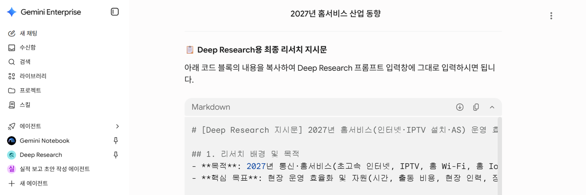
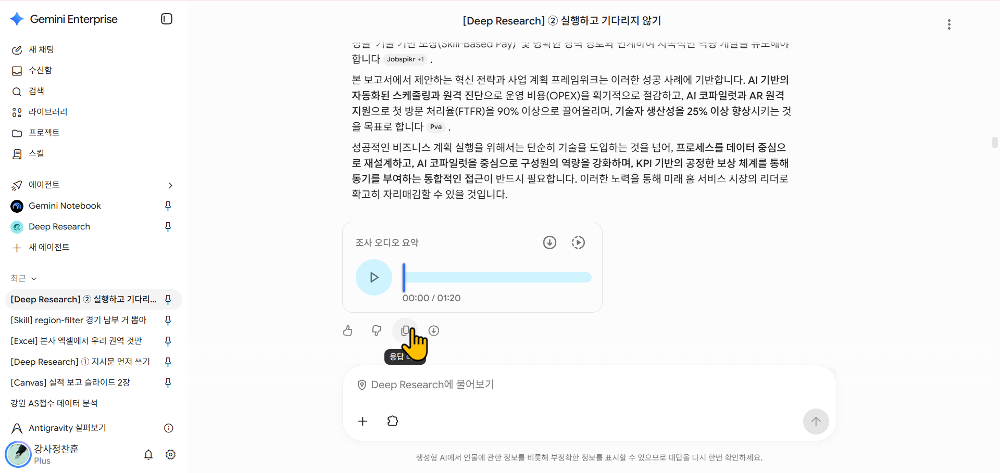

① 지시문 먼저 쓰기
새 채팅에서 아래 문구를 넣고, AI가 묻는 말에 하나씩 답합니다.
지시문 만들기 도우미
Deep Research에 맡길 리서치 지시문을 같이 만들어줘. 주제: 2027년 홈서비스(인터넷·IPTV 설치·AS) 업무계획 수립을 위한 산업 동향 아래 항목을 나에게 하나씩 물어보고, 마지막에 완성된 지시문을 코드 칸에 줘. 목적 / 범위(기간·국가) / 꼭 볼 항목 / 결과 형식(표·출처 표시) / 제외할 것
완성된 지시문은 코드 칸으로 나옵니다. 코드 칸 오른쪽 위 복사 버튼으로 통째로 복사합니다.

② 실행하고 기다리지 않기
- Deep Research를 열고 완성된 지시문을 붙여넣습니다.
- 연구 계획이 나오면 [연구 시작] 버튼을 누릅니다.
- 끝날 때까지 기다리지 말고 바로 다음 페이지(Notebook)으로 이동합니다.
⚠️ [연구 시작]을 꼭 누르세요
연구 계획만 나오고 버튼을 누르지 않으면 연구가 진행되지 않습니다. 중간에 오류가 나는 경우도 있으니, Notebook 실습 중에도 한 번씩 Deep Research 창을 들여다보고 오류가 났으면 다시 실행합니다.
🔒 사내 자료는 넣지 않습니다
Deep Research는 공개된 웹 정보를 찾습니다. 지시문에 사내 자료를 넣지 않습니다.
③ 결과 저장하고 읽기 (점심 전)
결과 창에서는 더 묻지 않습니다. 이어서 요청하면 연구가 다시 시작될 수 있습니다.
1단계. 결과 저장하기. 첫 응답 아래 복사 버튼을 누르고, 워드 새 문서에 붙여넣어 저장합니다. 이렇게 하면 번호마다 출처 링크가 그대로 남습니다.

📎 다운로드 버튼과의 차이
응답 아래 ↓ 버튼으로 DOCX·PDF를 바로 받을 수도 있지만, 이때는 출처 링크가 빠집니다. 출처가 필요하면 복사해서 붙여넣으세요. AI에게 다시 넣을 파일은 PDF보다 DOCX가 낫습니다.
2단계. 훑어보기.
- 보고서 구조를 훑어봅니다.
- 출처 링크 2개 이상을 직접 열어 봅니다.
- 업무계획에 쓸 문장 3개를 고릅니다.
3단계. 새 채팅에서 묻기. 저장한 파일을 새 채팅에 올리고 아래처럼 묻습니다.
보고서에게 묻기
첨부한 파일은 Deep Research 보고서야. 새로 검색하거나 리서치를 다시 하지 말고, 이 보고서 안에서만 답해줘. 1) 보고서 전체를 5줄로 요약해줘. 2) 그중 "[궁금한 부분. 예: 설치·AS 인력 운영 변화]"에 대한 내용을 보고서에서 원문 그대로 발췌해줘. 내 말로 바꾸지 마. 3) 발췌한 문장마다 보고서에 달린 근거 링크와, 보고서가 그 링크에서 가져온 내용을 함께 알려줘. 4) 근거 링크가 없는 문장은 "근거 없음"이라고 표시해줘.
링크는 마지막에 직접 열어 확인합니다.
결과가 나오지 않았다면 예시 보고서를 내려받아 써도 됩니다. 이 보고서는 오후 스킬 실습에서도 씁니다.